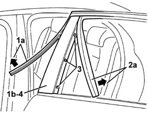

7010E50 REAR SIDE DOOR PILLAR TRIM (ONE) LEFT OR RIGHT - R.R.
- Path
- Procedures > 70 FITTINGS > 7010 PASSENGER COMPARTMENT REAR SIDE DOORS > 7010E REAR SIDE DOOR TRIM > 7010E50 REAR SIDE DOOR PILLAR TRIM (ONE) LEFT OR RIGHT - R.R.
- Kind
- repair procedure (removal / refitting; the operation number is the code)
- Applies to
- all engines; all production periods
- Interactive page
- https://sloeber94.github.io/elrnDB/alfa/159/en/#/939011188
Applies to: all engines; all production periods
 Removing
Removing
 Refitting
RefittingOp. 7010E62 REAR DOOR INNER REAR PANEL (ONE) LH OR RH - R R
Op. 7010E38 REAR SIDE DOOR INTERIOR HANDLE-R R
Op. 7010E10 REAR SIDE DOOR INNER PANEL - R.R. OR REPLACE
Op. 7010D15 REAR SIDE DOOR DESCENDING WINDOW GLASS (ONE), LEFT OR RIGHT - R.R
Op. 7010D26 REAR SIDE DESCENDING WINDOW GLASS SCRAPER (OUTER) (ONE), LEFT OR RIGHT - R.R
Op. 7010D18 REAR SIDE DOOR DESCENDING WINDOW GLASS CHANNEL (ONE), LEFT OR RIGHT - R.R
1. Release the seal (1a) in the area of the pillar outer cover (1b).
2. Release the duct (2a) in the area of the pillar outer cover (1b).
3. Undo the bolts.
4. Remove the pillar outer cover.

Applies to: all engines; all production periods
Refitting
Removing- Check that the pillar outer cover is not damaged.
- Fit the pillar outer cover in place.
- Fit the duct in the area of the pillar outer cover.
- Fit the seal in the area of the pillar outer cover.
Op. 7010D18 REAR SIDE DOOR DESCENDING WINDOW GLASS CHANNEL (ONE), LEFT OR RIGHT - R.R
Op. 7010D26 REAR SIDE DESCENDING WINDOW GLASS SCRAPER (OUTER) (ONE), LEFT OR RIGHT - R.R
Op. 7010D15 REAR SIDE DOOR DESCENDING WINDOW GLASS (ONE), LEFT OR RIGHT - R.R
Op. 7010E10 REAR SIDE DOOR INNER PANEL - R.R. OR REPLACE
Topics linked from this page (7)
- 7010D15 REAR SIDE DOOR DESCENDING WINDOW GLASS (ONE), LEFT OR RIGHT - R.R
- 7010D18 REAR SIDE DOOR DESCENDING WINDOW GLASS CHANNEL (ONE), LEFT OR RIGHT - R.R
- 7010D26 REAR SIDE DESCENDING WINDOW GLASS SCRAPER (OUTER) (ONE), LEFT OR RIGHT - R.R
- 7010D38 REAR SIDE DOOR MANUAL WINDOW OPENING MECHANISM HANDLE/RING NUT (ONE), LEFT OR RIGHT - R.R
- 7010E10 REAR SIDE DOOR INNER PANEL - R.R. OR REPLACE
- 7010E38 REAR SIDE DOOR INTERIOR HANDLE-R R
- 7010E62 REAR DOOR INNER REAR PANEL (ONE) LH OR RH - R R